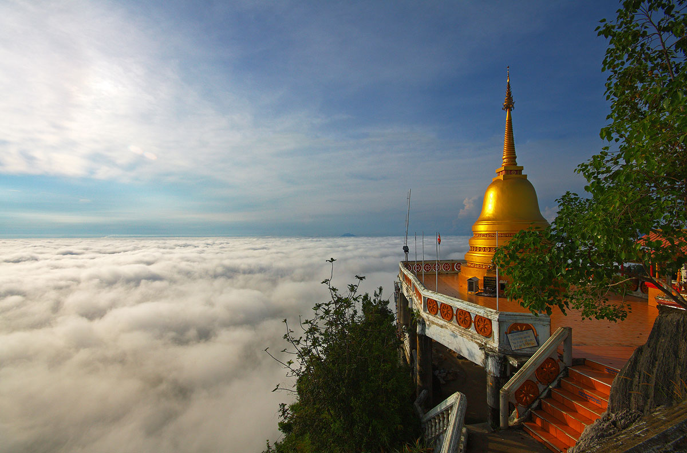
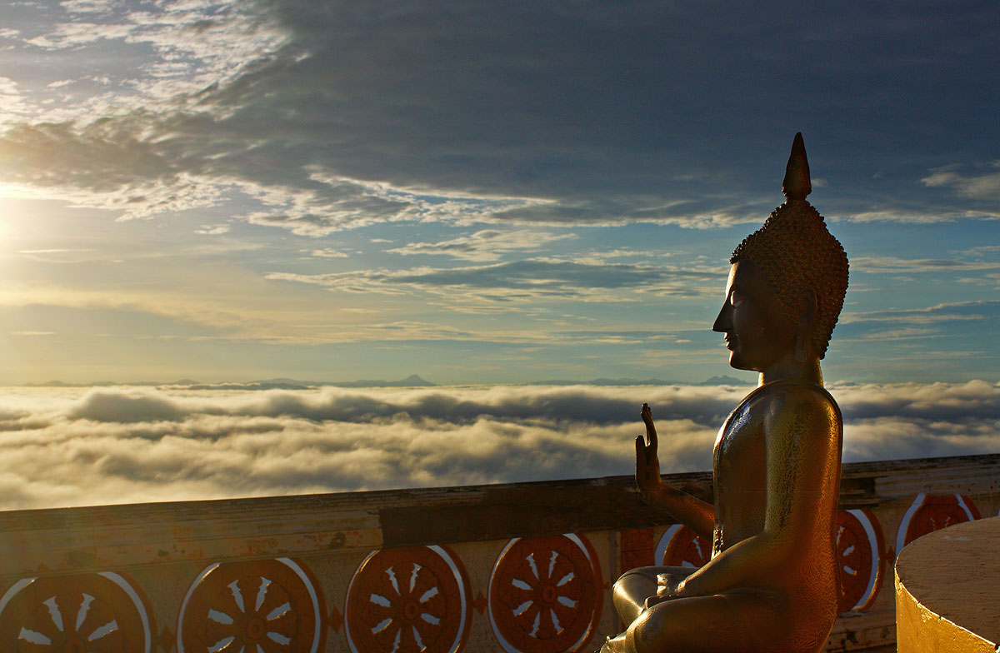

อ่าวนาง กระบี่ แผนที่
ถ้าใครมีโอกาสมาเที่ยวกระบี่ แล้วอย่าลืมแวะมาเที่ยวหาดถ้ำพระนางกันด้วยนะครับ เชื่อกันว่าสถานที่แห่งนี้เป็นที่สถิตของพระนางอันศักดิ์สิทธิ์ ซึ่งชาวเรือแถบนี้เคารพสักการะ


สวัสดีครับ..พอดีผมได้มีโอกาสไปเที่ยวกระบี่มาครับ และได้ไปเที่ยวที่วัดถ้ำเสือมาเลยจะมารีวิวให้ชมกันครับว่า มีความน่าสนใจยังไงและสามารถเดินทางไปยังไงได้บ้าง สำหรับการเดินทางนั้นผมเริ่มต้นจากที่สนามบินกระบี่ครับ ก็คือลงเครื่องเช่ารถแล้วก็ขับตรงมาที่วัดถ้ำเสือ
“วัดถ้ำเสือ” ตั้งอยู่ห่างจากตัวเมืองกระบี่ประมาณ 5-6 กิโลเมตร เป็นที่รู้จักกันดีในหมู่นักท่องเที่ยวทั้งชาวไทยและต่างชาติ พลาดไม่ได้กับการสักการะขอพรจาก "เจ้าแม่กวนอิม" ซึ่งตั้งประดิษฐานอยู่ภายในวัด สูงเด่นเป็นสง่า รวมถึงการพิชิตบันได 1,200 ขั้น เพื่อขึ้นไปสักการะ "พระธาตุเจดีย์ระฆังใหญ่" ซึ่งตั้งอยู่บนดอย อีกทั้งยังมองเห็นทิวทัศน์กระบี่ได้โดยรอบ

"วัดถ้ำเสือ" อยู่ห่างจากสนามบินกระบี่ประมาณ 10 กิโลเมตรครับ ใช้เวลาเดินทางประมาณ 15 นาทีครับ วิธีเดินทางที่สะดวกที่สุดก็คือการเช่ารถและขับไปครับ ถ้าขับรถไม่เป็นก็ต้องใช้บริการวันเดย์ทริปได้ครับ สามารถสอบถามได้จากโรงแรมที่พักได้เลยครับ
“วัดถ้ำเสือ” อยู่ห่างจากตัวเมืองกระบี่ประมาณ 9 กิโลเมตร ตั้งอยู่ในเขตพื้นที่ บ้านถ้ำเสือ ตำบลกระบี่น้อย อ.เมือง จ.กระบี่ พื้นที่บริเวณวัดประมาณ 200 ไร่ ประกอบไปด้วพื้นที่ราบ หุบเขาและยอดเขา ชื่อวัดนั้นมีข้อสันนิษฐานว่าเนื่องจากในอดีตเคยมีเสืออาศัยอยู่ และภายในถ้ำยังปรากฏหินธรรมชาติ เป็นรูปแบบของอุ้งเท้าเสือ ส่วนที่มาของวัดนี้น่าจะมาจากพระธุดงค์ที่เดินทางจาริกไปเพื่อหาสถานที่วิเวกในการปฏิบัติธรรม มาอาศัยอยู่ตามถ้ำ และมีชาวบ้านที่ศรัทธาตามมากราบไหว้เป็นจำนวนมาก จนกลายเป็นวัดในเวลาต่อมา


ทางขึ้นเขาเป็นบันได ชันประมาณ 45-60 องศา ทั้งหมด 1,237 ขั้น สูงจากระดับน้ำทะเลประมาณ 600 เมตรครับ อยากฟังเสียงหัวใจตัวเองเต้น ต้องไปขึ้นดูครับ
ช่วงที่มักจะเกิดหมอกก็ราวๆเดือน กันยาฯ-มกราฯ แต่ทั้งนี้ทั้งนั้นต้องมีองค์ประกอบร่วมอีกหลายอย่างเลยครับ - อากาศต้องร้อนไม่มีฝนมา2-3วัน แล้วเกิดฝนตกหนักช่วงบ่ายๆเย็นๆ ยิ่งมีฟ้าผ่าฟ้าร้องยิ่งมีโอกาสเกิดหมอกสูงครับ - ตอนเช้าอีกวันอากาศต้องเปิด ตื่นมาแล้วเห็นดาว - ลมต้องไม่แรง ถ้าได้ประมาณนี้ก็ลุยเลยครับ โอกาสกินแห้วน้อยครับ(ถ้าแห้วไม่รับประกันนะครับ..555)
มองลงมาจะเห็นพระธาตุที่กำลังสร้าง
ถ้าใครมีโอกาสมาเที่ยวกระบี่ แล้วอย่าลืมแวะมาเที่ยวหาดถ้ำพระนางกันด้วยนะครับ เชื่อกันว่าสถานที่แห่งนี้เป็นที่สถิตของพระนางอันศักดิ์สิทธิ์ ซึ่งชาวเรือแถบนี้เคารพสักการะ